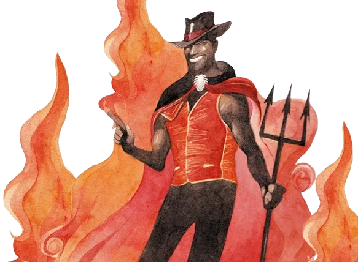

“Em algumas casas das religiões africanas e afro-brasileiras Exu é o sentinela e protetor”, afirma. Mas ele também assume, em algumas canções, características de uma espécie de mensageiro entre os orixás e o ser humano.
Exú abre caminhos. Essa entidade representa as novas estradas, oportunidades, a vida e determinação. Contudo, por ser um protetor fiel, ele auxilia no encontro da melhor trilha a ser percorrida